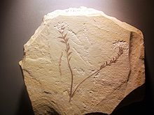
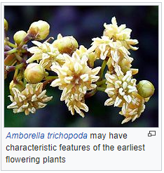
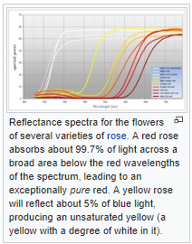
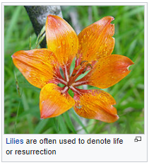
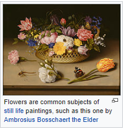
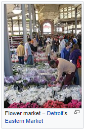
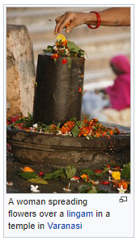
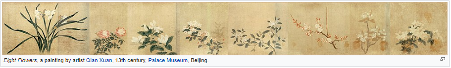

From Wikipedia, the free encyclopedia
From Wikipedia, the free encyclopedia
Aflower, sometimes known as a bloomor blossom, is the reproductive structure found in flowering plants (plants of the division Magnoliophyta, also called angiosperms). The biological function of a flower is to effect reproduction, usually by providing a mechanism for the union of sperm with eggs. Flowers may facilitate outcrossing (fusion of sperm and eggs from different individuals in a population) or allow selfing (fusion of sperm and egg from the same flower). Some flowers produce diaspores without fertilization ( parthenocarpy). Flowers contain sporangia and are the site where gametophytes develop. Many flowers have evolved to be attractive to animals, so as to cause them to be vectors for the transfer of pollen. After fertilization, the ovary of the flower develops into fruit containing seeds.
In addition to facilitating the reproduction of flowering plants, flowers have long been admired and used by humans to bring beauty to their environment, and also as objects of romance, ritual, religion, medicine and as a source of food.
| Contents [hide] |
|---|
|
The essential parts of a flower can be considered in two parts: the vegetative part, consisting of petals and associated structures in the perianth, and the reproductive or sexual parts. A stereotypical flower consists of four kinds of structures attached to the tip of a short stalk. Each of these kinds of parts is arranged in a whorl on receptacle. The four main whorls (starting from the base of the flower or lowest node and working upwards) are as follows:
Main articles: Perianth, Sepal and Corolla (flower)
Collective the calyx and corolla form the perianth (see diagram)
Although the arrangement described above is considered "typical", plant species show a wide variation in floral structure. [1] These modifications have significance in the evolution of flowering plants and are used extensively by botanists to establish relationships among plant species
The four main parts of a flower are generally defined by their positions on the receptacle and not by their function. Many flowers lack some parts or parts may be modified into other functions and/or look like what is typically another part. In some families, like Ranunculaceae, the petals are greatly reduced and in many species the sepals are colorful and petal-like. Other flowers have modified stamens that are petal-like; the double flowers of Peonies and Roses are mostly petaloid stamens. [2] Flowers show great variation and plant scientists describe this variation in a systematic way to identify and distinguish species.
Specific terminology is used to describe flowers and their parts. Many flower parts are fused together; fused parts originating from the same whorl are connate, while fused parts originating from different whorls are adnate; parts that are not fused are free. When petals are fused into a tube or ring that falls away as a single unit, they are sympetalous (also called gamopetalous). Connate petals may have distinctive regions: the cylindrical base is the tube, the expanding region is the throat and the flaring outer region is the limb. A sympetalous flower, with bilateral symmetry with an upper and lower lip, is bilabiate. Flowers with connate petals or sepals may have various shaped corolla or calyx, including campanulate, funnelform, tubular, urceolate, salverform or rotate.
Referring to "fusion," as it is commonly done, appears questionable because at least some of the processes involved may be non-fusion processes. For example, the addition of intercalary growth at or below the base of the primordia of floral appendages such as sepals, petals, stamens and carpels may lead to a common base that is not the result of fusion. [3][4][5]
Many flowers have a symmetry. When the perianth is bisected through the central axis from any point and symmetrical halves are produced, the flower is said to be actinomorphic or regular, e.g. rose or trillium. This is an example of radial symmetry. When flowers are bisected and produce only one line that produces symmetrical halves, the flower is said to be irregular or zygomorphic, e.g. snapdragon or most orchids.
Flowers may be directly attached to the plant at their base (sessile—the supporting stalk or stem is highly reduced or absent). The stem or stalk subtending a flower is called a peduncle. If a peduncle supports more than one flower, the stems connecting each flower to the main axis are called pedicels. The apex of a flowering stem forms a terminal swelling which is called the torus or receptacle.
In those species that have more than one flower on an axis, the collective cluster of flowers is termed an inflorescence. Some inflorescences are composed of many small flowers arranged in a formation that resembles a single flower. The common example of this is most members of the very large composite (Asteraceae) group. A single daisy or sunflower, for example, is not a flower but a flower head—an inflorescence composed of numerous flowers (or florets). An inflorescence may include specialized stems and modified leaves known as bracts.
 Main article: Floral formula and Floral digram
Main article: Floral formula and Floral digram
A floral formulais a way to represent the structure of a flower using specific letters, numbers and symbols, presenting substantial information about the flower in a compact form. It can represent a taxon, usually giving ranges of the numbers of different organs, or particular species. Floral formulae have been developed in the early 19th century and their use has declined since. Prenner et al. (2010) devised an extension of the existing model to broaden the descriptive capability of the formula. [6] The format of floral formulae differs in different parts of the world, yet they convey the same information. [7][8][9][10]
The structure of a flower can also be expressed by the means of floral diagrams. The use of schematic diagrams can replace long descriptions or complicated drawings as a tool for understanding both floral structure and evolution. Such diagrams may show important features of flowers, including the relative positions of the various organs, including the presence of fusion and symmetry, as well as structural details. [7]
A flower develops on a modified shoot or axis from a determinate apical meristem (determinate meaning the axis grows to a set size). It has compressed internodes, bearing structures that in classical plant morphology are interpreted as highly modified leaves.[11] Detailed developmental studies, however, have shown that stamens are often initiated more or less like modified stems (caulomes) that in some cases may even resemble branchlets. [5][1] Taking into account the whole diversity in the development of the androecium of flowering plants, we find a continuum between modified leaves (phyllomes), modified stems (caulomes), and modified branchlets (shoots). [12][13]
The transition to flowering is one of the major phase changes that a plant makes during its life cycle. The transition must take place at a time that is favorable for fertilization and the formation of seeds, hence ensuring maximal reproductive success. To meet these needs a plant is able to interpret important endogenous and environmental cues such as changes in levels of plant hormones and seasonable temperature and photoperiod changes. [14] Many perennial and most biennial plants require vernalization to flower. The molecular interpretation of these signals is through the transmission of a complex signal known as florigen, which involves a variety of genes, including Constans, Flowering Locus C and Flowering Locus T. Florigen is produced in the leaves in reproductively favorable conditions and acts in buds and growing tips to induce a number of different physiological and morphological changes. [15]
The first step of the transition is the transformation of the vegetative stem primordia into floral primordia. This occurs as biochemical changes take place to change cellular differentiation of leaf, bud and stem tissues into tissue that will grow into the reproductive organs. Growth of the central part of the stem tip stops or flattens out and the sides develop protuberances in a whorled or spiral fashion around the outside of the stem end. These protuberances develop into the sepals, petals, stamens, and carpels. Once this process begins, in most plants, it cannot be reversed and the stems develop flowers, even if the initial start of the flower formation event was dependent of some environmental cue. [16] Once the process begins, even if that cue is removed the stem will continue to develop a flower.
Yvonne Aitken has shown that flowering transition depends on a number of factors, and that plants flowering earliest under given conditions had the least dependence on climate whereas later-flowering varieties reacted strongly to the climate setup.
The molecular control of floral organ identity determination appears to be fairly well understood in some species. In a simple model, three gene activities interact in a combinatorial manner to determine the developmental identities of the organ primordia within the floral meristem. These gene functions are called A, B and C-gene functions. In the first floral whorl only A-genes are expressed, leading to the formation of sepals. In the second whorl both A- and B-genes are expressed, leading to the formation of petals. In the third whorl, B and C genes interact to form stamens and in the center of the flower C-genes alone give rise to carpels. The model is based upon studies of mutants in Arabidopsis thaliana and snapdragon, Antirrhinum majus. For example, when there is a loss of B-gene function, mutant flowers are produced with sepals in the first whorl as usual, but also in the second whorl instead of the normal petal formation. In the third whorl the lack of B function but presence of C-function mimics the fourth whorl, leading to the formation of carpels also in the third whorl.
Most genes central in this model belong to the MADS-box genes and are transcription factors that regulate the expression of the genes specific for each floral organ.
The principal purpose of a flower is the reproduction of the individual and the species. All flowering plants are heterosporous, producing two types of spores. Microspores are produced by meiosis inside anthers while megaspores are produced inside ovules, inside an ovary. In fact, anthers typically consist of four microsporangia and an ovule is an integumented megasporangium. Both types of spores develop into gametophytes inside sporangia. As with all heterosporous plants, the gametophytes also develop inside the spores (are endosporic).
In the majority of species, individual flowers have both functional carpels and stamens. Botanists describe these flowers as being perfect or bisexual and the species as hermaphroditic. Some flowers lack one or the other reproductive organ and called imperfect or unisexual. If unisex flowers are found on the same individual plant but in different locations, the species is said to be monoecious. If each type of unisex flower is found only on separate individuals, the plant is dioecious.
Flowering plants usually face selective pressure to optimize the transfer of their pollen, and this is typically reflected in the morphology of the flowers and the behaviour of the plants. Pollen may be transferred between plants via a number of 'vectors'. Some plants make use of abiotic vectors — namely wind (anemophily) or, much less commonly, water (hydrophily). Others use biotic vectors including insects (entomophily), birds (ornithophily), bats ( chiropterophily) or other animals. Some plants make use of multiple vectors, but many are highly specialised.
Cleistogamous flowers are self-pollinated, after which they may or may not open. Many Viola and some Salvia species are known to have these types of flowers
The flowers of plants that make use of biotic pollen vectors commonly have glands called nectaries that act as an incentive for animals to visit the flower. Some flowers have patterns, called nectar guides, that show pollinators where to look for nectar. Flowers also attract pollinators by scent and color. Still other flowers use mimicry to attract pollinators. Some species of orchids, for example, produce flowers resembling female bees in color, shape, and scent. Flowers are also specialized in shape and have an arrangement of the stamens that ensures that pollen grains are transferred to the bodies of the pollinator when it lands in search of its attractant (such as nectar, pollen, or a mate). In pursuing this attractant from many flowers of the same species, the pollinator transfers pollen to the stigmas—arranged with equally pointed precision—of all of the flowers it visits.
Anemophilous floweruse the wind to move pollen from one flower to the next. Examples include grasses, birch trees, ragweed and maples. They have no need to attract pollinators and therefore tend not to be "showy" flowers. Male and female reproductive organs are generally found in separate flowers, the male flowers having a number of long filaments terminating in exposed stamens, and the female flowers having long, feather-like stigmas. Whereas the pollen of animal-pollinated flowers tends to be large-grained, sticky, and rich in protein (another "reward" for pollinators), anemophilous flower pollen is usually small-grained, very light, and of little nutritional value to animals.
The primary purpose of a flower is reproduction. Since the flowers are the reproductive organs of plant, they mediate the joining of the sperm, contained within pollen, to the ovules — contained in the ovary. Pollination is the movement of pollen from the anthers to the stigma. The joining of the sperm to the ovules is called fertilization. Normally pollen is moved from one plant to another, but many plants are able to self pollinate. The fertilized ovules produce seeds that are the next generation. Sexual reproduction produces genetically unique offspring, allowing for adaptation. Flowers have specific designs which encourages the transfer of pollen from one plant to another of the same species. Many plants are dependent upon external factors for pollination, including: wind and animals, and especially insects. Even large animals such as birds, bats, and pygmy possums can be employed. The period of time during which this process can take place (the flower is fully expanded and functional) is called anthesis. The study of pollination by insects is called anthecology.
The pollination mechanism employed by a plant depends on what method of pollination is utilized.
Most flowers can be divided between two broad groups of pollination methods:
Entomophilous: flowers attract and use insects, bats, birds or other animals to transfer pollen from one flower to the next. Often they are specialized in shape and have an arrangement of the stamens that ensures that pollen grains are transferred to the bodies of the pollinator when it lands in search of its attractant (such as nectar, pollen, or a mate). In pursuing this attractant from many flowers of the same species, the pollinator transfers pollen to the stigmas—arranged with equally pointed precision—of all of the flowers it visits. Many flowers rely on simple proximity between flower parts to ensure pollination. Others, such as the Sarracenia or lady-slipper orchids, have elaborate designs to ensure pollination while preventing self-pollination.
Anemophilous: flowers use the wind to move pollen from one flower to the next, examples include the grasses, Birch trees, Ragweed and Maples. They have no need to attract pollinators and therefore tend not to grow large blossoms. Whereas the pollen of entomophilous flowers tends to be large-grained, sticky, and rich in protein (another "reward" for pollinators), anemophilous flower pollen is usually small-grained, very light, and of little nutritional value to insects, though it may still be gathered in times of dearth. Honeybees and bumblebees actively gather anemophilous corn (maize) pollen, though it is of little value to them.
Some flowers with both stamens and a pistil are capable of self-fertilization, which does increase the chance of producing seeds but limits genetic variation. The extreme case of self-fertilization occurs in flowers that always self-fertilize, such as many dandelions. Some flowers are self-pollinated and use flowers that never open or are self-pollinated before the flowers open, these flowers are called cleistogamous. Many Viola species and some Salvia have these types of flowers. Conversely, many species of plants have ways of preventing self-fertilization. Unisexual male and female flowers on the same plant may not appear or mature at the same time, or pollen from the same plant may be incapable of fertilizing its ovules. The latter flower types, which have chemical barriers to their own pollen, are referred to as self-sterile or self-incompatible.
Plants cannot move from one location to another, thus many flowers have evolved to attract animals to transfer pollen between individuals in dispersed populations. Flowers that are insect-pollinated are called entomophilous; literally "insect-loving" in Greek. They can be highly modified along with the pollinating insects by co-evolution. Flowers commonly have glands called nectaries on various parts that attract animals looking for nutritious nectar. Birds and bees have color vision, enabling them to seek out "colorful" flowers.
Some flowers have patterns, called nectar guides, that show pollinators where to look for nectar; they may be visible only under ultraviolet light, which is visible to bees and some other insects. Flowers also attract pollinators by scent and some of those scents are pleasant to our sense of smell. Not all flower scents are appealing to humans; a number of flowers are pollinated by insects that are attracted to rotten flesh and have flowers that smell like dead animals, often called Carrion flowers, including Rafflesia, the titan arum, and the North American pawpaw (Asimina triloba). Flowers pollinated by night visitors, including bats and moths, are likely to concentrate on scent to attract pollinators and most such flowers are white.
Other flowers use mimicry to attract pollinators. Some species of orchids, for example, produce flowers resembling female bees in color, shape, and scent. Male bees move from one such flower to another in search of a mate.
Many flowers have close relationships with one or a few specific pollinating organisms. Many flowers, for example, attract only one specific species of insect, and therefore rely on that insect for successful reproduction. This close relationship is often given as an example of coevolution, as the flower and pollinator are thought to have developed together over a long period of time to match each other's needs.
This close relationship compounds the negative effects of extinction. The extinction of either member in such a relationship would mean almost certain extinction of the other member as well. Some endangered plantspecies are so because of shrinking pollinator populations.
There is much confusion about the role of flowers in allergies. For example, the showy and entomophilous goldenrod(Solidago) is frequently blamed for respiratory allergies, of which it is innocent, since its pollen cannot be airborne. The types of pollen that most commonly cause allergic reactions are produced by the plain-looking plants (trees, grasses, and weeds) that do not have showy flowers. These plants make small, light, dry pollen grains that are custom-made for wind transport.
The type of allergens in the pollen is the main factor that determines whether the pollen is likely to cause hay fever. For example, pine tree pollen is produced in large amounts by a common tree, which would make it a good candidate for causing allergy. It is, however, a relatively rare cause of allergy because the types of allergens in pine pollen appear to make it less allergenic. Instead the allergen is usually the pollen of the contemporary bloom of anemophilous ragweed (Ambrosia), which can drift for many miles. Scientists have collected samples of ragweed pollen 400 miles out at sea and 2 miles high in the air. [17] A single ragweed plant can generate a million grains of pollen per day. [18]
Among North American plants, weeds are the most prolific producers of allergenic pollen. [19] Ragweed is the major culprit, but other important sources are sagebrush, redroot pigweed, lamb's quarters, Russian thistle (tumbleweed), and English plantain.
It is common to hear people say they are allergic to colorful or scented flowers like roses. In fact, only florists, gardeners, and others who have prolonged, close contact with flowers are likely to be sensitive to pollen from these plants. Most people have little contact with the large, heavy, waxy pollen grains of such flowering plants because this type of pollen is not carried by wind but by insects such as butterflies and bees.
While land plants have existed for about 425 million years, the first ones reproduced by a simple adaptation of their aquatic counterparts: spores. In the sea, plants—and some animals—can simply scatter out genetic clones of themselves to float away and grow elsewhere. This is how early plants reproduced. But plants soon evolved methods of protecting these copies to deal with drying out and other damage which is even more likely on land than in the sea. The protection became the seed, though it had not yet evolved the flower. Early seed-bearing plants include the ginkgo and conifers.
 groups of extinct gymnosperms, particularly seed ferns, have been proposed as the ancestors of flowering plants but there is no continuous fossil evidence showing exactly how flowers evolved. The apparently sudden appearance of relatively modern flowers in the fossil record posed such a problem for the theory of evolution that it was called an "abominable mystery" by Charles Darwin.
Recently discovered angiosperm fossils such as Archaefructus, along with further discoveries of fossil gymnosperms, suggest how angiosperm characteristics may have been acquired in a series of steps. An early fossil of a flowering plant, Archaefructus liaoningensis from China, is dated about 125 million years old. [20][21] Even earlier from China is the 125–130 million years old Archaefructus sinensis. In 2015 a plant (130 million-year-old Montsechia vidalii, discovered in Spain) was claimed to be 130 million years old. [22] In 2018, scientists reported that the earliest flowers began about 180 million years ago. [23]
Recent DNA analysis (molecular systematics) [24] shows that Amborella trichopoda, found on the Pacific island of New Caledonia, is the only species in the sister group to the rest of the flowering plants, and morphological studies suggest that it has features which may have been characteristic of the earliest flowering plants. [25]
Besides the hard proof of flowers in or shortly before the Cretaceous,[26][27] there is some circumstantial evidence of flowers as much as 250 million years ago. A chemical used by plants to defend their flowers, oleanane, has been detected in fossil plants that old, including gigantopterids,[28] which evolved at that time and bear many of the traits of modern, flowering plants, though they are not known to be flowering plants themselves, because only their stems and prickles have been found preserved in detail; one of the earliest examples of petrification.
The similarity in leaf and stem structure can be very important, because flowers are genetically just an adaptation of normal leaf and stem components on plants, a combination of genes normally responsible for forming new shoots. [29] The most primitive flowers are thought to have had a variable number of flower parts, often separate from (but in contact with) each other. The flowers would have tended to grow in a spiral pattern, to be bisexual (in plants, this means both male and female parts on the same flower), and to be dominated by the ovary (female part). As flowers grew more advanced, some variations developed parts fused together, with a much more specific number and design, and with either specific sexes per flower or plant, or at least "ovary inferior".
The general assumption is that the function of flowers, from the start, was to involve animals in the reproduction process. Pollen can be scattered without bright colors and obvious shapes, which would therefore be a liability, using the plant's resources, unless they provide some other benefit. One proposed reason for the sudden, fully developed appearance of flowers is that they evolved in an isolated setting like an island, or chain of islands, where the plants bearing them were able to develop a highly specialized relationship with some specific animal (a wasp, for example), the way many island species develop today. This symbiotic relationship, with a hypothetical wasp bearing pollen from one plant to another much the way fig wasps do today, could have eventually resulted in both the plant(s) and their partners developing a high degree of specialization. Island genetics is believed to be a common source of speciation, especially when it comes to radical adaptations which seem to have required inferior transitional forms. Note that the wasp example is not incidental; bees, apparently evolved specifically for symbiotic plant relationships, are descended from wasps.
Likewise, most fruit used in plant reproduction comes from the enlargement of parts of the flower. This fruit is frequently a tool which depends upon animals wishing to eat it, and thus scattering the seeds it contains.
While many such symbiotic relationships remain too fragile to survive competition with mainland organisms, flowers proved to be an unusually effective means of production, spreading (whatever their actual origin) to become the dominant form of land plant life.
Flower evolution continues to the present day; modern flowers have been so profoundly influenced by humans that many of them cannot be pollinated in nature. Many modern, domesticated flowers used to be simple weeds, which only sprouted when the ground was disturbed. Some of them tended to grow with human crops, and the prettiest did not get plucked because of their beauty, developing a dependence upon and special adaptation to human affection. [30]
Many flowering plants reflect as much light as possible within the range of visible wavelengths of the pollinator the plant intends to attract. Flowers that reflect the full range of visible light are generally perceived as white by a human observer. An important feature of white flowers is that they reflect equally across the visible spectrum. While many flowering plants use white to attract pollinators, the use of color is also widespread (even within the same species). Color allows a flowering plant to be more specific about the pollinator it seeks to attract. The color model used by human color reproduction technology (CMYK) relies on the modulation of pigments that divide the spectrum into broad areas of absorption. Flowering plants by contrast are able to shift the transition point wavelength between absorption and reflection. If it is assumed that the visual systems of most pollinators view the visible spectrum as circular then it may be said that flowering plants produce color by absorbing the light in one region of the spectrum and reflecting the light in the other region. With CMYK, color is produced as a function of the amplitude of the broad regions of absorption. Flowering plants by contrast produce color by modifying the frequency (or rather wavelength) of the light reflected. Most flowers absorb light in the blue to yellow region of the spectrum and reflect light from the green to red region of the spectrum. For many species of flowering plant, it is the transition point that characterizes the color that they produce. Color may be modulated by shifting the transition point between absorption and reflection and in this way a flowering plant may specify which pollinator it seeks to attract. Some flowering plants also have a limited ability to modulate areas of absorption. This is typically not as precise as control over wavelength. Humans observers will perceive this as degrees of saturation (the amount ofwhite in the color).
Many flowers have important symbolic meanings in Western culture. [31] The practice of assigning meanings to flowers is known as floriography. Some of the more common examples include:
Because of their varied and colorful appearance, flowers have long been a favorite subject of visual artists as well. Some of the most celebrated paintings from well-known painters are of flowers, such as Van Gogh's sunflowers series or Monet's water lilies. Flowers are also dried, freeze dried and pressed in order to create permanent, three-dimensional pieces of flower art.
Flowers within art are also representative of the female genitalia,[33] as seen in the works of artists such as Georgia O'Keeffe, Imogen Cunningham, Veronica Ruiz de Velasco, and Judy Chicago, and in fact in Asian and western classical art. Many cultures around the world have a marked tendency to associate flowers with femininity.
The great variety of delicate and beautiful flowers has inspired the works of numerous poets, especially from the 18th–19th century Romantic era. Famous examples include William Wordsworth's I Wandered Lonely as a Cloud and William Blake's Ah! Sun-Flower.
Their symbolism in dreams has also been discussed, with possible interpretations including "blossoming potential". [34]
The Roman goddess of flowers, gardens, and the season of Spring is Flora. The Greek goddess of spring, flowers and nature is Chloris.
In Hindu mythology, flowers have a significant status. Vishnu, one of the three major gods in the Hindu system, is often depicted standing straight on a lotus flower. [35] Apart from the association with Vishnu, the Hindu tradition also considers the lotus to have spiritual significance. [36] For example, it figures in the Hindu stories of creation. [37]
In modern times, people have sought ways to cultivate, buy, wear, or otherwise be around flowers and blooming plants, partly because of their agreeable appearance and smell. Around the world, people use flowers to mark important events in their lives:
People therefore grow flowers around their homes, dedicate parts of their living space to flower gardens, pick wildflowers, or buy commercially-grown flowers from florists.
Flowers provide less food than other major plant parts (seeds, fruits, roots, stems and leaves), but still provide several important vegetables and spices. Flower vegetables include broccoli, cauliflower and artichoke. The most expensive spice, saffron, consists of dried stigmas of a crocus. Other flower spices are cloves and capers
. Hops flowers are used to flavor beer. Marigold flowers are fed to chickens to give their egg yolks a golden yellow color, which consumers find more desirable; dried and ground marigold flowers are also used as a spice and colouring agent in Georgian cuisine.Flowers of the dandelion and elder are often made into wine. Bee pollen, pollen collected from bees, is considered a health food by some people. Honey consists of bee-processed flower nectar and is often named for the type of flower, e.g. orange blossom honey, clover honey and tupelo honey.
Hundreds of fresh flowers are edible, but only few are widely marketed as food. They are often added to salads as garnishes. Squash blossoms are dipped in breadcrumbs and fried. Some edible flowers include nasturtium, chrysanthemum, carnation, cattail, Japanese honeysuckle, chicory, cornflower, canna, and sunflower.[39] Edible flowers such as daisy, rose, and violet are sometimes candied. [40]
Flowers such as chrysanthemum, rose, jasmine, Japanese honeysuckle, and chamomile, chosen for their fragrance and medicinal properties, are used as tisanes, either mixed with tea or on their own. [41]
Flowers have been used since prehistoric times in funeral rituals: traces of pollen have been found on a woman's tomb in the El Miron Cave in Spain.[42] Many cultures draw a connection between flowers and life and death, and because of their seasonal return flowers also suggest rebirth, which may explain why many people place flowers upon graves. The ancient Greeks, as recorded in Euripides's play The Phoenician Women, placed a crown of flowers on the head of the deceased;[43] they also covered tombs with wreaths and flower petals. Flowers were widely used in ancient Egyptian burials, [44] and the Mexicans to this day use flowers prominently in their Day of the Dead celebrations[45] in the same way that their Aztec ancestors did. 
The flower-giving tradition goes back to prehistoric times when flowers often had a medicinal and herbal attributes. Archaeologists found in several grave sites remnants of flower petals. Flowers were first used as sacrificial and burial objects. Ancient Egyptians and later Greeks and Romans used flowers. In Egypt, burial objects from the time around 1540 BC[citation needed] were found, which depicted red poppy, yellow Araun, cornflower and lilies. Records of flower giving appear in Chinese writings and Egyptian hieroglyphics, as well as in Greek and Roman mythology. The practice of giving a flower flourished in the Middle Ages when couples showed affection through flowers.
The tradition of flower-giving exists in many forms. It is an important part of Russian culture and folklore. It is common for students to give flowers to their teachers. To give yellow flowers in a romantic relationship means break-up in Russia. Nowadays, flowers are often given away in the form of a Flower bouquet.[46][47][48][49]